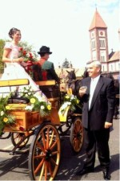

|
|
|
|
Balatonfüred am Nordufer des Balatons befindet sich östlich
der Halbinsel Tihany. Die Kleinstadt hat 13.500 Einwohner, die
alle irgendwie vom Tourismusgewerbe leben. |
|
|
Alte Wohnviertel mit Schlössern, Palästen, Villen und Kirchen, stimmungsvolle Weingärten,
Parkanlagen und uralte Bäume begrüßen Einheimische und Fremde
auf Schritt und Tritt. Balatonfüred wurde bereits im 18.
Jahrhundert zum Heilurlaubsort erklärt, im Jahre 1971 zum
Heilkurort und zählt heute zu den
ältesten Kurorten Ungarns. Bereits zu Beginn des 19.
Jahrhunderts gab es hier sogar ein Theater. Die einzige Industrieanlage vor Ort
aus der roten Ära, eine Bootswerft für Segelboote wurde vor
der Jahrhundertwende eingestellt. Ein akzeptabler Badestrand
am Balatonufer fehlt bislang. So entstand neulich ein
etwas abseits am westlichen Ortsrand. Der
Aquapark in
den Sommermonaten und das Herzkrankenhaus ganzjährig sind heute die einzigen
Großbetriebe in Balatonfüred.
Man spürt die mediterrane Ruhe überall - zumindest außerhalb der Bala-Bala
Balatonsaison. Landesweit berühmt ist das
ganzjährig geöffnete Fischrestaurant
in der Nähe der Hafenmole.
|
|
|
| |
Die
Siedlung wurde an dem sanft neigenden, breiten, sonnigen
Südhang der sog. Balaton-Riviera erbaut. Das bis zu 700 Meter
hohe
Bakonygebirge im Norden schützt Balatonfüred
ganzjährig
von kalten Winden. An den Südhängen der
Hügel reihen
sich Wein- und Obstgärten.
Die Stadt ist Zentrum eines
historischen Weinbaugebietes.
Auf den
steilen Südhängen von Balatonfüred wachsen einerseits Reben
heran, unter den Weinbergen wurden hier immer größere Räume
für die winterliche Einlagerung des Eises ausgehöhlt, das man
vom zugefrorenen Balaton holte. Die künstlichen Höhlen für das
Eis wurden laufend erweitert und auch für die Einlagerung der
örtlichen Weinproduktion genutzt. Mit dem
elektrischen Kühlschrank verloren die Eiskeller ihre
Bedeutung, aber der räumliche Bedarf an den Räumlichkeiten für
die Einlagerung von Wein
aus der gesamten wächst auch heute noch enorm.
Der Kurort verdankt seinen Ruf den
kohlensäurehaltigen Quellen, die an vielen Stellen im
Stadtgebiet
entspringen. Die heilende Kraft des Wassers eignet sich für
Trinkkuren und wird seit Anfang des 18. Jahrhunderts im Herzkrankenhaus
für Badekur zur Behandlung von Herz- und
Gefäßerkrankungen genutzt.1826 vernichtete ein
Großbrand die meisten Gebäude, danach entstand das
heutige
denkmalgeschützte Bild der Umgebung von Gyógy
tér
Platz. Die Abtei von Tihany ließ sein Gut um die Badeanlage
parzellieren. Damals begann der Bau der prunkvollen Villen im
Uferbereich, die man auch heute noch bewundern kann.
Beliebte
Ausflugsziele: Jókai Aussichtsturm,
Lóczy-Höhle, Koloska-Quelle, Koloska-Tal.
Eine
vierspurige Landstraße durchquert Balatonfüred in
Ost-West Richtung und führt direkt nach Budapest (140 km) oder
zum weltberühmten Thermalkurort Bad
Hévíz im Westen (70 km). Veszprém, die
Hauptstadt des gleichnamigen Verwaltungsbezirks (Komitat) liegt nur 18
km nördlich und ist auch mit der Eisenbahn zu erreichen.
|
|
|
Balatonfüred hat
einen Schiffsanleger für die Balatonflotte und einen
Yachthafen. Die Bootswerft
ist der einzig nennenswerte Industriebetrieb in der Stadt. Abgesehen
vom sommerlichen Touristenandrang ist die Stadt extrem ruhig, ideal
für erholungsbBalatonfüred
ist nicht nur ein bekannter Kurort, sondern auch ein
überaus beliebtes Ferienziel. Balatonfüred hat
mehrere
Badestrände und drängt sich im Norden, an den ersten
sonnenverwöhnten Steilhängen des Bakonygebirges etwa
300 m
hoch hinauf. Das Klima ist hier deutlich mediterran getönt und
hat
die Stadtentwicklung wesentlich beeinflusst. So sei vor allem der
Weinbau genannt. edürftige Menschen. |
 |
In den Sommermonaten
genießen vielen
Urlauber
das angenehme Klima, das wunderbar weiche Wasser des Balatons, die
schöne Umgebung und die kostbaren Weine der Region. Der
nordöstliche Ortsteil Arács wurde erst 1954
eingemeindet.
Arács und die östlich angrenzende Ortschaft Csopak
bilden
das Kerngebiet der berüh mten Weinbauregion
Balatonfüred-Csopak. In Arács befindet sich eine
Fachschule
für Weinbau. Sogar die berühmten Weine aus Badacsony
werden
hier in die Flaschen gefüllt und
größtenteils hier
eingekellert. Balatonfüred wurde 1987 zur "Internationalen
Stadt der Trauben und des Weines" erklärt. |
|
|
Von
diesem Badeort fuhr das erste Dampfschiff über den Balaton,
hier wurde der erste Segelverein ins Leben gerufen, und hier
ließ sich die Prominenz im vorigen Jahrhundert ihre Villen
bauen. Im eklektischen Wohnhaus des Romanciers Móricz
Jókai (1825-1904) befindet sich heute sein Gedenkmuseum
(Honvéd utca 1) mit originaler Einrichtung und
persönlichen Gegenständen.
|
|
|
Vaszary Villa -
Die Villa wurde 1892 vom damaligen Kardinal
von Esztergom, Kolos Vaszry (richtig so, kein Tippfehler) mit Sitz in
Esztergom, erbaut.
Zur Eröffnung der Vaszary-Ausstellung wurden im Rahmen einer
Rodin-Austellung alle
Meisterwerke
des weltberühmten Künstlers aus
dem
aus
Budapest ausgeliehen, die das Museum besitzt. Dazu zählten 6
Skulpturen, einige
Kupferstiche
und Grafiken des französischen Bildhauers, Grafikers und
Malers Auguste Rodin (1840-1917). Ausgestellt sind auch
die Dokumente
über den
Erwerb der Kunststücke und die Briefe aus der Korrespondenz
des
Künstlers
mit dem ungarischen Museologen Gábor Térey. Vermerk: Der Kardinal
Vaszry und der Künstler Vaszary waren keine Verwandte. |
|
|
Man trifft im Stadtgebiet auf
mehrere Sauerbrunnen,
die
natürliches Quellwasser liefern, das 110-1400 mg
gelöste Kohlensäure enthält und damit eine
Heilwirkung auf die Herzmuskulatur hat. Das Heilwasser hilft auch bei
Diabetes und Verdauungsstörungen.
Seit
300 Jahren werden die
Sauerwasserquellen bei der Behandlung von Herzkranken verwendet. |
|
So
baute man im Hafenbereich das staatliche Herzkrankenhaus, das
auch
über die Landesgrenzen hinaus bekannt ist. Der
berühmte Nobelpreisträger und indische Dichter
Rabindranath Tagore besang in seinen vertonten Gedichten
Balatonfüred vielfach, nachdem er hier geheilt wurde. Er
kehrte mehrmals nach Balatonfüred zurück und
verbrachte mehrere Jahre seines Lebens hier. Die Uferpromenade vor dem
Herzkrankenhaus wurde nach ihm benannt. Sie wird von zahlreichen
Statuen, Gedenktafeln und Bäumen geziert, die von in- und
ausländischen Persönlichkeiten des geistigen Lebens
gesetzt oder gepflanzt wurden. |
 |
Indikationen: Es ist
besonders als Trinkkur zur Linderung von Magen- und
Darmbeschwerden und als Bad zur Verbesserung des peripheren
Blutkreislaufsystems, zur Erleichterung der Herzfunktion geeignet. Das
Staatliche Herzkrankenhaus verfügt über die modernste
diagnostische und
therapeutische Ausstattung für die Herzinfarkt-Behandlung,
für
therapeutische Maßnahmen nach Herzoperationen und
Vorbereitung auf
derartige Eingriffe.
Kontraindikationen:
Balatonfüred kann Patienten mit Hyperthyreose und kardialer
Dekompensation nicht empfohlen werden.
|
|
|
|
Ausflugsziele in die
nähere Umgebung
|
| |
Ganz
nah benachbart liegt die Halbinsel Tihany,
ein reizvolles Ausflugsziel, das ein herrliches Panorama bietet.
Lohnenswert ist ein Besuch der vor 1000 Jahren gegründeten
Abtei,
außerdem können auch zahlreiche Museen und
Ausstellungen
besichtigt
werden. Zusätzlich zu den Sehenswürdigkeiten am
Balaton-Nordufer kann
man mit der Fähre auch die Attraktionen des anderen Ufers
erreichen.
Hierbei muss das nahe liegende Freilichtmuseum in
Szántód-Kőröshegy erwähnt
werden, wo man das
Leben in einem alten ungarischen Dorf nachvollziehen kann.
|
| |
|
Jährlich
wiederkehrende Veranstaltungen in Balatonfüred
|
| |
Der Saisonauftakt ist seit
2012 etwa
Anfang April und wird mit der Begrüßung des ersten
Schiffes der Balatonflotte aus Siófok gefeiert. Vor 2012 fand das
feierliche Balaton-Ansegeln und damit die traditionelle und
offizielle Eröffnungsfeier der Balatonsaison seit über 70
Jahren immer Mitte Mai im Hafen von Balatonfüred statt. Der
frühere Saisonbeginn hängt sicherlich mit der globalen
Erderwärmung zusammen, wodurch die frühere
6-Wochen-Balatonsaison um viele Monate verlängert wurde.
Neulich gab es sogar eine über 30°C warme Hitzewelle bis in
den November hinein - es gibt aber auch große
Klimaschwankungen in den einzelnen Jahren, jedoch immer öfter
kann man auch noch im Oktober baden.
|
Balatonfüred gilt als Hochburg des Segelsports auf dem
Balaton, was die Segelhissensfeier am Rosengarten vor der Mole symbolisiert. Die ersten Segelregatten werden von
Folkloreveranstaltungen und Ausstellungen begleitet.
|
|
|
BALATON BLAUES BAND
– Segelregatta
- jährlich seit 200 Jahren
Jährlich Mitte Juli - amtlich zum 47. Male
im Jahre 2016
Obwohl schon vor 200 Jahren
berühmte Persönlichkeiten Jahr für Jahr um die Wette
segelten, die Ratsherren der Stadt änderten die
Wettbewerbsregeln im Jahre 1934 und seitdem findet die
älteste Seeregatta in Europa amtlich statt. Nach rd. 80
Jahren ist man nun bei 47 angekommen, weil die Veranstaltung in
der roten Ära als kapitalistisches Luxusgehabe verpönt
pausieren musste. |
 |
Lange Zeit hing die
Regatta mit dem anna Ball
zusammen und der Bürgermeister eröffnete im Beisein der
frisch gebackenen Landesschönheit die Segelregatte.
Die 160 km lange Rundstrecke der
Regatta verläuft wie
folgt: Balatonfüred – Balatonkenese –
Tihany –
Keszthely – Balatonfüred.
Rund 350 Schiffe stechen
hier mit
knapp 1.700 Seglern an Bord in See. Die Teilnahme am Wettbewerb ist
kostenpflichtig, für die Besucher der Veranstaltung ist der
Eintritt frei. In den Städten und Dörfern rund um den
See
finden gleichzeitig zahlreiche Straßenfeste statt.
Die Siegertropheen
rechts
wurden letztes Jahr von der berühmten Porzellanmanufaktur in hergestellt
und von Audi/Győr finanziert. |
 |
| |
|
|
|
|
|
|
|
Die
Konzertreihe der Unterhaltungsmusik findet im ganzen Sommer auf der
Freilichtbühne statt.
|
| |
|
|
WEINWOCHEN -
gibt es öfter im Jahr. Die örtlichen
Weinbauern präsentieren ihre Weine im Rahmen
eines Kulturfestivals
an der Tagore-Promenade vor dem Herzkrankenhaus.
Zudem bieten täglich Meister des Kunsthandwerks ihre Produkte
an. Am Abend wird das Publikum in der Nähe der Hafenmole mit
Kulturprogrammen unterhalten.
Ein Video von den Weinwochen
im Juli 2013: |
|
|
Das Bild links zeigt das Keramikmuseum
INTERNATIONALES DICHTERTREFFEN
- Ende September gilt die Preisverteilungsfeier des Internationalen
Dichterwettbewerbs Salvatore Quasimodo als großes Ereignis.
In
der Umgebung können schöne Ausflüge
unternommen werden,
zum Beispiel in das Koloska-Tal, zur Koloska-Quelle oder zur
einzigartigen Lóczy-Höhle. Ein Spaziergang von der
Höhle zum Jókai-Aussichtsturm mit
dem herrlichen
Panoramabild, lohnt sich unbedingt. |
|
|
BUCHTSCHWIMMEN - In
der zweiten Augustwoche wird zwischen Balatonfüred und Tihany
ein Schwimmwettkampf veranstaltet. Ungarns berühmte Sportler
und Olympioniken nehmen daran teil. Die Strecke von 3,6 km kann von
Groß und Klein gleichermaßen bewältigt
werden. Jeder Teilnehmer erhält eine Badekappe mit dem Emblem
des Wettbewerbs. Allen Schwimmern, die das Ziel in Tihany erreichen,
wird ein T-Shirt als andenken überreicht.
|
|
|
Der
Balaton friert im Winter zu. Wenn die Kälte in Windstille
einbricht,
dann bildet sich eine so glatte Eisfläche, dass man angenehm
Schlittschuh laufen und auf speziellen Kufenseglern über das
Eis
flitzen kann (Eissegeln).
Die
ungarischen Meisterschaften im Eiskunstlaufen fanden schon
öfter in Balatonfüred statt - genau da, wo der
Eissegler am Bild zu sehen ist. Im Hintergrund sieht man
die Halbinsel Tihany. |
|
|
Der Anna-Ball von
Balatonfüred
|
| |
Der erste Anna-Ball fand am 26. Juli 1825 im gleichen Gebäude
statt, das damals noch Horváth-Haus hieß. Der Ball war zu
Ehren der Tochter Anna ins Leben gerufen. Die Familie Horváth
ist auch heute noch eine Weinbauer- und Weinhändlerfamilie am
berühmten Weinbauort Szentgyörgyhegy am westlichen Ende des
Balatons. Sie siedelten hier aus kulturellem Interesse an.
Hinzu kommt eine Besonderheit in Balatonfüred.
Auf den steilen Südhängen von Balatonfüred wachsen einerseits
Reben heran, unter den Weinbergen wurden hier immer
größere Räume für die winterliche Einlagerung des Eises
ausgehöhlt, das man vom zugefrorenen Balaton holte. Die
künstlichen Höhlen für das Eis wurden laufend erweitert und
auch für die Einlagerung der örtlichen Weinproduktion genutzt.
Die Weinkeller wurden immer größer und auch deren Zahl wuchs
in den Himmel, schließlich dienten sie für die Einlagerung der
Weine aus der gesamten
Mit dem Rückgang des Interesses am Balatoneis für Kühlzwecke
gewannen die Weinkeller an Bedeutung, die Lagerkapazität der
Weinkeller ist heute enorm groß.
|
|
|
Ein
Juli Wochenende, Freitag bis Sonntag findet der Anna-Ball in
Balatonfüred in der
Festhalle des Grand Hotels, im 1. Stock des Gästehauses, statt.
Der Anna-Ball
findet
seit 1825 alljährlich zum
Namenstag der Anna (27. Juli) immer an einem Samstag im Hotel
Árkád statt und endet noch nicht mit der
Krönung
der neuen Schönheitskönigen. Die Ballkönigin
und ihre mitgewählten
Hofdamen fahren am nächsten Tag (Sonntag) in offenen Kutschen
durch die
Stadt. Weitere Porgramme, die den Anna-Ball begleiten, finden im
Bürgermeisteramt, im Hafen am Vitorlás
tér Platz und in der Nähe des
Restaurants Halászkert (Fischrestaurant) statt. |
|
|
|
Der letzte Sonnabend von Juli
ist Tag des berühmten Anna-Balls. Am darauffolgenden Tag
stellt sich die Schönheitskönigin des Balls dem
Publikum der Stadt während einer Kutschenrundfahrt vor.
Der Anna-Ball ist
ein Treffpunkt der
ungarischen High Society aus
aller Welt, wo auch andere Nationen sogar aus Übersee
zahlreich
vertreten sind. |
| |
|
Eine Kurzfassung der Ereignisse am Anna Ball
zeigt das folgende Video: |
| |
|
|
| |
|
....mehr vom Anna Ball könnten Sie im folgenden Video sehen.
Es erscheint aber stattdessen in Deutschland ein Bild mit
der Aufschrift wie rechts. Freuen Sie sich auf die über die
Landesgrenzen hinaus kulturbehindernde Aktivität Ihrer
deutschen GEMA, die Sie
mit Ihren Rundfunkgebühren finanzieren! |
|
|
|
Ach übrigens: könnte - hätte - Fahrradkette! Mein Schulkamerad ist ein Komponist in Ungarn
und sang neulich unserer Abiturklasse ein Weihnachtslied,
das er urheberrechtlich nicht geschützt hatte, deponierte seine Komposition bei YouTube für
unseren Freundeskreis zum Anhören. Für einige von uns
erschien in Deutschland das obige Bild von GEMA. Es zeigt das, was
GEMA aus
unserem Weihnachtsgeschenk uns gönnt - und wir zahlen dafür
u.a. die GEMA-Zwangsabgabe, die während der NS-Diktatur
anders bezeichnet eingeführt wurde.
|
Unerhört, unverschämt, wie
man von bestimmten Medien mit Hilfe von
mit Zweitstimmen aus dem Nebel emporgeschlichenen Parteibonzen entmündigt und beraubt wird in Deutschland.
Walter Steimeier verlor alle Wahlen, wo das Volk gegen ihn
stimmen durfte, hinter geschlosenen Türen ist er trotzdem
zum Staatspräsidenten gewählt worden - Dank sogenannter
Demokratie. Übrigens: Auch der aus Brüssel wegen
Korruption(svorwurf?) abgeschobene Martin Schulz ist hinter
geschlossenen Türen zum Parteichef gewählt worden, dabei
wurden die Parteimitglieder nie dazu befragt, was nach den
Regularien seiner Partei SPD erforderlich wäre. One man one vote=democracy, deswegen die Zweite Stimme (=Maffiastimme)
abschaffen!
|
| |
| |
 |
Samstag nachmittags - Feierlicher
Aufmarsch zum Anna-Ball |
|
|
Das Tanzstudio
aus Debrezin macht den Eröffnungstanz
|
|
|
|
Heiße
spanische Tänze sorgen für keine
Langeweile, während die Juroren die Schönste unter
den Schönen des Abends wählen. |
|
|
|
Siegerehrung
und am nächsten
Tag
(Sonntag) beim feierlichen Empfang durch den Bürgermeister vor
seinem Amtssitz. |
 |
|
|
Auch
wenn der
Anna-Ball weltweit bekannt ist, er findet
selbstverständlich
in Balatonfüred statt. Wenn anderswo rund um den Globus herum,
so wie in Toronto/Kanada (Bild links), die Exilungarn den Anna-Ball
vor einem Panoramabild von Budapest feiern, dann hat das damit zu tun,
dass die
meisten dieser Leute fernab der Heimat den Anna-Ball in
Balatonfüred noch nie
gesehen haben und vom Hörensagen etwas nachahmen. |
| |
| |
Ungarn-Tourist Team

|
| |
 |
| |
|